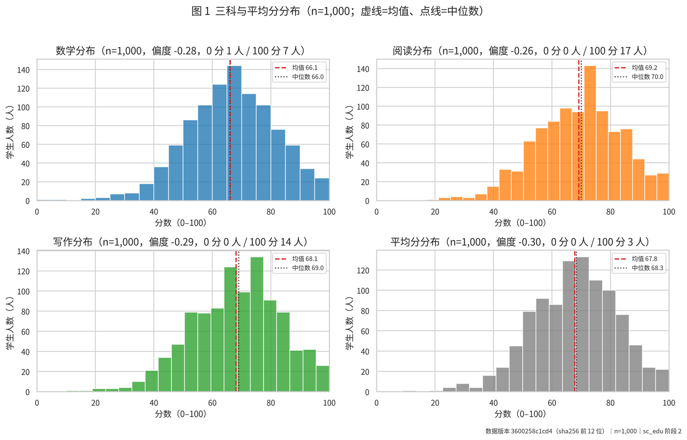

数据分析 · scientific-agent-skills学生成绩分析仪表盘
可离线浏览的交互式 HTML 看板，包含 6 个页面，涵盖数据质量、分组差异、模型与公平性分析，以及报告和图表中心。
项目背景
这是老师安排的演示项目，目的是展示在配合 skill 的情况下，LLM 如何帮助科研或学习提速。
我的参与与收获
我主要调整了页面排版和布局。过程中我先了解 skill 的内容与触发方式，再将它用于任务；也观察到 LLM 具备一定的推理能力，并体验到借助 skill 完成这一系列工作的过程。
数据分析描述关联，不作因果推断。
打开仪表盘 →